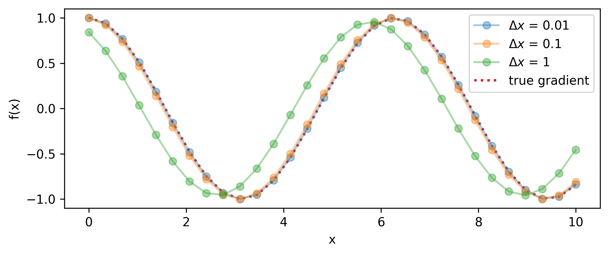
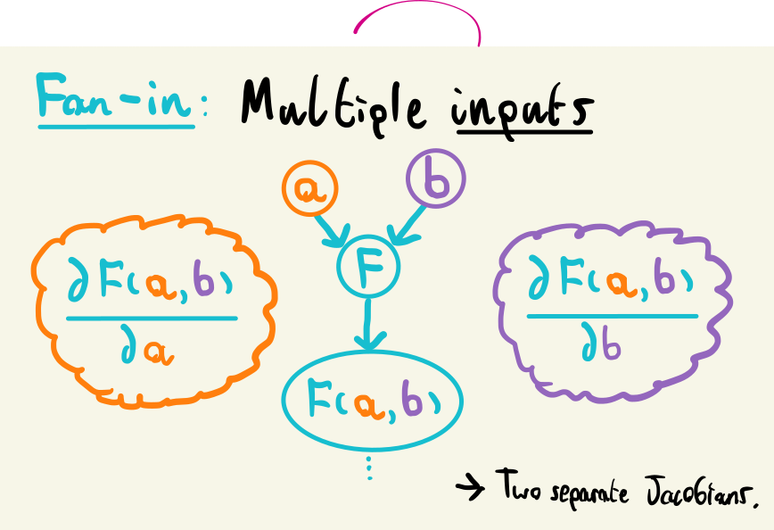
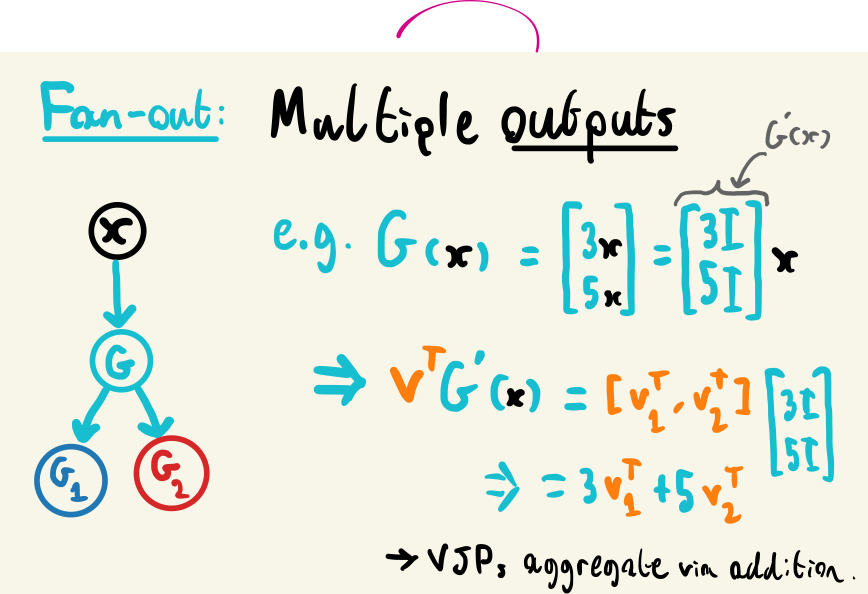
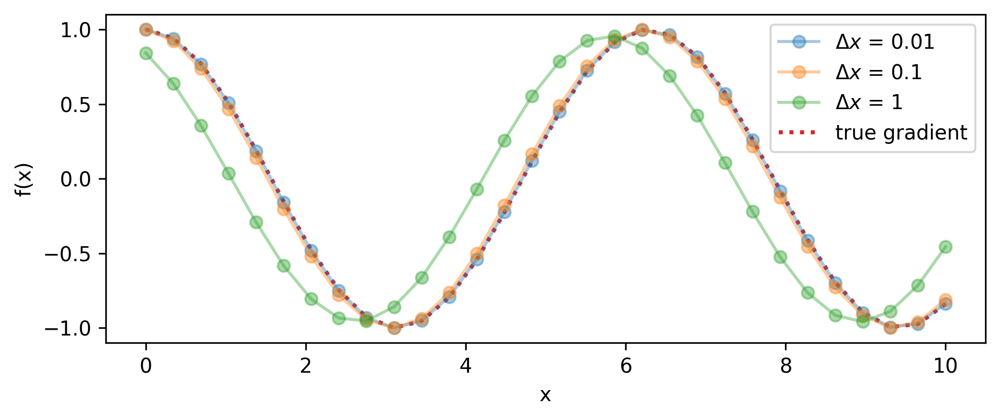
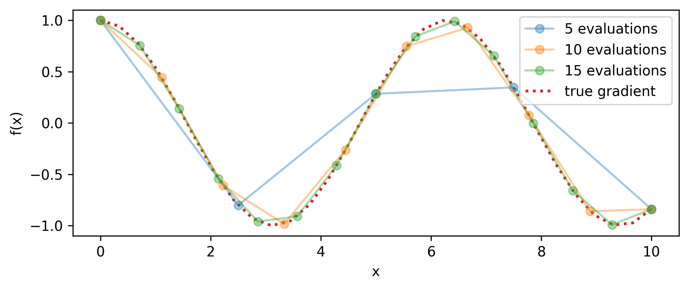

y=sin(x), varying the distance between the evaluated points.(Hamilton et al. 2013), (Alwall et al. 2011), (Hunter 2007)
One may think that the pace of scientific discovery is determined by the speed at which new ideas are formed. That was likely true in the early days; if I posited that a rock, when thrown, will roughly trace a parabolic arc, we likely don’t need to take leaps in experimental physics to test this hypothesis to some ballpark degree of accuracy – maybe we could even get away with just a ruler and the naked eye. In contrast to this, science as done in the present requires a little additional technology in order to probe the questions that we’re interested in (unless we get really, really good rulers).
I say this to emphasize that the advancements made in deep learning over the past couple decades can be largely attributed to the ability to run efficient and exact learning algorithms at scale. For this, we have automatic differentiation to thank (which we playfully term “autodiff”), which allows us to take the gradient of pretty much arbitrary computer code. Which is pretty damn cool.
This section will take a tour through the basics of gradient computation, and then we’ll compare the different types of automatic differentiation mechanisms (do we build a graph of our program before executing the code, or do we trace it at runtime?), and then show some example code for each.
The core idea of autodiff is the breaking down of a potentially complicated calculation into a set of computational primitives: basic operations with known derivatives. Think of things like \(+\), \(\times\), \(-\), \(\div\), \(\sin\), \(\log\), and so on. We know how to take the derivative across each of these operations analytically, so we can say to a computer “Every time you see a \(\sin\), replace it with a \(\cos\) in the gradient calculation”. Then, thanks to the chain rule, we can build up the gradient of the whole program by multiplying these gradient results together.
Getting into the specifics of this, we’ll begin by focusing on a function \(F: \mathbb{R}^n \rightarrow \mathbb{R}\), which is a scalar valued function that takes in a vector input of dimensionality \(n\), and returns a scalar. We deliberately choose this to mimic an objective function as seen in deep learning, which typically maps a high-dimensional vector of weights & biases to a single real number. We can also explicitly denote the application and output of \(F\) as \(F(\mathbf{x}\in\mathbb{R}^n) \rightarrow y \in \mathbb{R}\).
If we break down \(F\) into a composition of (arbitrarily) four other functions, we would write that as \(F = D \circ C \circ B \circ A\). Each one of these can be any random operation, like adding 5, taking the logarithm, or hooking into your OS to gain root access (equivalent to the identity operation from a numerical perspective). We can write this explicit chain of computations as \(y = F(\mathbf{x}) = D(C(B(A(\mathbf{x}))))\), where we can interpret the computation as starting from the inner level, i.e. application of \(A\) to \(\mathbf{x}\), then \(B\) to \(\mathbf{a} =\) the output of \(A(\mathbf{x})\)), and so on. Let’s also define \(\mathbf{b} = B(\mathbf{a})\), \(\mathbf{c} = C(\mathbf{b})\), and \(y = D(\mathbf{c})\).
We’ll see why function composition is important to cover – a core idea of automatic differentiation is to break down the gradient of the whole into the composition of the gradient of its parts via the chain rule. But more on that later.
Let’s turn to gradients: we define the Jacobian matrix of partial derivatives of \(F\) as
\[ J_F(\mathbf{x}) = F'(\mathbf{x}) = \left[\begin{array}{ccc}\frac{\partial y_{1}}{\partial x_{1}} & \cdots & \frac{\partial y_{1}}{\partial x_{n}} \\\vdots & \ddots & \vdots \\\frac{\partial y_{m}}{\partial x_{1}} & \cdots & \frac{\partial y_{m}}{\partial x_{n}}\end{array}\right], \tag{5.1}\]
assuming \(y\) has multiple components (\(y_1\), \(y_2\), etc.). However, since we’re going from \(\mathbb{R}^n \rightarrow \mathbb{R}\), the Jacobian is just one row vector:
\[ F'(\mathbf{x}) = \left[ \frac{\partial y}{\partial x_1} , \frac{\partial y}{\partial x_2}, \cdots, \frac{\partial y}{\partial x_n}\right]. \]
Given the decomposition of \(F\) above, we can break this down into a product of individual Jacobian matricies for each of the intermediate functions via the chain rule:
\[ F'(\mathbf{x}) = \frac{\partial y}{\partial \mathbf{c}}\frac{\partial \mathbf{c}}{\partial \mathbf{b}}\frac{\partial \mathbf{b}}{\partial \mathbf{a}} \frac{\partial \mathbf{a}}{\partial \mathbf{x}}, \]
One can note the sizes of each of the intermediate matricies in the format (# rows, # columns):
\[\begin{align*} \mathrm{size}(\partial y / \partial \mathbf{c}) &= (1,len(c)) \\ \mathrm{size}(\partial \mathbf{c} / \partial \mathbf{b} ) &= (len(c), len(b)) \\ \mathrm{size}(\partial \mathbf{b} / \partial \mathbf{a} ) &= (len(b), len(a)) \\ \mathrm{size}(\partial \mathbf{a} / \partial \mathbf{x} ) &= (len(a), n) \end{align*}\]
The size of the final Jacobian matrix is then \((1, n)\), as shown earlier (i.e. one row vector). We’ll come back to why these sizes are important – for instance, these matricies could be very hard to store if \(n\) is large.
This kind of sequential matrix multiplication can be called “accumulating” the Jacobian piece-by-piece. The order of the multiplication of these matricies (i.e. where to put the parentheses) matters to optimize computational load, but we’ll look at two particular extreme cases:
\[ F'(\mathbf{x}) = \frac{\partial y}{\partial \mathbf{c}}\left(\frac{\partial \mathbf{c}}{\partial \mathbf{b}}\left(\frac{\partial \mathbf{b}}{\partial \mathbf{a}} \cdot \frac{\partial \mathbf{a}}{\partial \mathbf{x}}\right)\right), \]
Here’s an example of what that first matrix product looks like: \[ \frac{\partial \mathbf{b}}{\partial \mathbf{a}} \cdot \frac{\partial \mathbf{a}}{\partial \mathbf{x}}\ =\frac{\partial \mathbf{b}}{\partial \mathbf{x}}=\left[\begin{array}{ccc}\frac{\partial b_{1}}{\partial x_{1}} & \cdots & \frac{\partial b_{1}}{\partial x_{n}} \\\vdots & \ddots & \vdots \\\frac{\partial b_{m}}{\partial x_{1}} & \cdots & \frac{\partial b_{m}}{\partial x_{n}}\end{array}\right]. \]
\[ F'(\mathbf{x}) = \left( \left( \frac{\partial y}{\partial \mathbf{c}} \cdot \frac{\partial \mathbf{c}}{\partial \mathbf{b}} \right)\frac{\partial \mathbf{b}}{\partial \mathbf{a}} \right)\frac{\partial \mathbf{a}}{\partial \mathbf{x}}, \]
Again, let’s take a look at the result of the first matrix product:
\[ \frac{\partial y}{\partial \mathbf{c}} \cdot \frac{\partial \mathbf{c}}{\partial \mathbf{b}}\ =\frac{\partial y}{\partial \mathbf{b}}= \left[ \frac{\partial y}{\partial b_1} , \frac{\partial y}{\partial b_2}, \cdots, \frac{\partial y}{\partial b_n}\right] \]
Why is that so much smaller than forward accumulation? Our initial matrix \(\partial y / \partial \mathbf{c}\) has only one row due to \(y\) being 1-dimensional. Moreover, we note that this causes the size of every intermediate matrix product to always be \((1, \dots)\), meaning if we have this situation where we’re going from \(\mathbb{R}^n \rightarrow \mathbb{R}\) like with \(F\), reverse accumulation looks much more efficient in terms of memory usage and compute to get the same result, since we’re only ever storing intermediate vectors and not high-dimensional matricies. This is the typical setting with a neural network: we have a very large input space (could even be ~billions of parameters), and we want to evaluate the Jacobian matrix of a scalar (which would have one row and ~billions of columns) with respect to those parameters. If we had the complementary setting, i.e. \(\mathbb{R} \rightarrow \mathbb{R}^n\), which could maybe be some parametrization of a simulator that produces high-dimensional data, we would probably want to compute the Jacobian with forward-mode accumulation instead.
Let’s touch again on this idea of only storing intermediate vectors: we can see this arose in the case of reverse accumulation from the fact that our first multiplication had a 1 in the external dimensions, i.e. was a row vector \(\mathbf{v}^T\) multiplying from the left. We can recover this situation for forward mode if we pre-multiply the Jacobian matrix by some column vector \(\mathbf{v}\) from the right. This leads us to think about the generality offered by considering Jacobian-vector and vector-Jacobian products (JVP/VJPs) as primary functions of forward and reverse mode autodiff respectively.
To illustrate this with equations, we can write a JVP for our function \(F\) with the same operation ordering as with the forward accumulation of a Jacobian:
\[ F'(\mathbf{x})\,\mathbf{v} = \frac{\partial y}{\partial \mathbf{c}}\left(\frac{\partial \mathbf{c}}{\partial \mathbf{b}}\left(\frac{\partial \mathbf{b}}{\partial \mathbf{a}} \left(\frac{\partial \mathbf{a}}{\partial \mathbf{x}} \mathbf{v} \right) \right)\right) \]
Thinking of the rules of matrix multiplication, we note that \(\frac{\partial \mathbf{a}}{\partial \mathbf{x}} \mathbf{v}\) is only tractable if \(\mathbf{v}\) is of size (n, 1), since \(\frac{\partial \mathbf{a}}{\partial \mathbf{x}}\) is of size (len(a), n). Provided this is the case, all following computations will include 1 as one of the outer dimensions, meaning we once again only need to consider intermediary vectors instead of matricies when computing this quantity.
Now, you may be thinking “Nathan, this is all well and good, but what is the vector \(\mathbf{v}\), and why are you showing it to me? Aren’t we interested in the Jacobian itself, and not its product with some arbitrary vector?”
Firstly, I would respond by asking why you’re saying this in a thick British accent. After that, I would then go on to say that we can still use this formulation to recover the whole Jacobian – we can simply let \(\mathbf{v}\) be a one-hot encoding (or unit vector if you’re more mathematically inclined) of one of the input dimensions, e.g. \(\mathbf{v} = [1, 0, \dots, 0]^T\), and the result of our JVP will then be the first column of the Jacobian:
\[\begin{align} F'(\mathbf{x})\,\mathbf{v} &= \begin{bmatrix} \frac{\partial y_1}{\partial x_1} \\ \frac{\partial y_2}{\partial x_1}\\ \vdots \end{bmatrix} \end{align}\]
We can repeat this for each dimension by changing the place we put the 1 in \(\mathbf{v}\), then concatenate the results to get the whole Jacobian. So by building up the Jacobian one column at a time when doing forward accumulation, we gain this advantage we talked about earlier of only storing intermediate vectors, and never having to instantiate any potentially large matricies, regardless of the dimensionality of the input or output.
Ah, but wait a minute, I used \(y_1, y_2\) etc. above – my mistake, we don’t actually have a vector for our choice of \(F\) from earlier. We only have just one scalar output \(y\). That means that the result of our computation above would be the single first element of the Jacobian: \(\partial y / \partial x_1\), and we would need one JVP calculation for each element. That seems a bit excessive! Wasn’t reverse mode meant to be better? Shouldn’t we use that?
Agreed. Let’s do the same thing, and produce a vector-Jacobian product with a one-hot encoding of the output dimensions.
\[\begin{align} \mathbf{v}^T \, F'(\mathbf{x}) &= \left( \left( \left( \mathbf{v}^T \,\frac{\partial y}{\partial \mathbf{c}} \right) \frac{\partial \mathbf{c}}{\partial \mathbf{b}} \right)\frac{\partial \mathbf{b}}{\partial \mathbf{a}} \right)\frac{\partial \mathbf{a}}{\partial \mathbf{x}} \\ & =\left[ \frac{\partial y_1}{\partial x_1} , \frac{\partial y_1}{\partial x_2}, \cdots, \frac{\partial y_1}{\partial x_n}\right]. \end{align}\]
We’ve calculated the first row of the Jacobian, and can construct the full thing with a VJP for each row, corresponding to each dimension of the output. In the case of this output \(y\) being scalar as before, that would make \(\mathbf{v}^T = 1\) (only one output dimension), and we recover the full Jacobian in one go, since it was only one row to begin with! But of course, if \(y\) had multiple dimensions (say 5), we would only have to compute 5 VJPs to form the whole Jacobian, never having to worry about the size of the intermediate quantities.
Based on these appealing properties, it helps when using autodiff to consider the JVP/VJP as the fundamental operation when calculating gradients of programs in practice. It’s a funny way of thinking at first, but the quantity we end up with is just the regular Jacobian (or elements thereof) in the end, so it’s only important when considering implementation details of gradient computations.
To summarize: we’ve seen the difference between forward- and reverse-mode autodiff, and their usefulness in constructing Jacobians via Jacobian-vector and vector-Jacobian products, which bypass the need to store large intermediate matricies by forming the Jacobian one column or one row at a time respectively. We also note that for the deep learning case of interest, where we have an objective function \(F\) that maps \(\mathbb{R}^n \rightarrow \mathbb{R}\) with \(n\) large, we far prefer reverse-mode autodiff to calculate its gradient, which we need to perform optimization.
One thing that you may have noticed in our previous section is the fact that we focused only on a simple decomposition of \(F\) into the sequential application of four functions \(A\), \(B\), \(C\), and \(D\) to the input \(\mathbf{x}\). In reality, computer programs are going to look a lot more complicated, and will be represented by the more general construct of a directed acyclic graph (DAG). We need to adapt the above framework for JVPs/VJPs in order to generalize to these real-life scenarios.
It turns out this is fairly simple: we only need to consider two additional cases than what we’ve considered already. The application of a single operation with a single input and output would be represented as one node in a graph, with an edge going in and coming out. Luckily, the only additional generalization we need to consider is the case of multiple inputs (fan-in) and multiple outputs (fan-out).
For the fan-in case, i.e. multiple input values from different computations: wwe know how to calculate Jacobians for a single input, so we can just do this process for each input separately. More explicitly: for \(F(\mathbf{a}, \mathbf{b})\), with \(\mathbf{a}\) and \(\mathbf{b}\) possibly coming from different parts of the program, we calculate the Jacobian for each input separately as before: \(F'_\mathbf{a}(\mathbf{a}, \mathbf{b}) = \partial y / \partial \mathbf{a}\) and \(F'_\mathbf{b}(\mathbf{a}, \mathbf{b}) = \partial y /\partial \mathbf{b}\).
Fan-out is slightly more involved, since we now have the case of multiple return values. Let’s examine a function with this behaviour: \(G(\mathbf{x}) = [3\mathbf{x}, 5\mathbf{x}]^T\). We can see that this input replicates our input \(\mathbf{x}\) with different factors applied to each output, which we can represent through the linear function \(G(\mathbf{x}) = [3I, 5I]^T\mathbf{x}\), where \(I\) is the identity matrix. The Jacobian of \(G\) is then just the coefficients multiplying \(\mathbf{x}\): \(G'(\mathbf{x}) = [3I, 5I]^T\). But in practice, we’re probably going to be computing a VJP across this node in the graph during backpropagation. Remembering that this involves multiplying by a vector \(\mathbf{v}^T\) with the same dimensionality of the output of \(G\), we can then write \(\mathbf{v}^T = [\mathbf{v_1}^T, \mathbf{v_2}^T]\), one vector for each vector in \(G(\mathbf{x})\). This then leads to
\[\begin{align} \mathbf{v}^TG'(\mathbf{x}) &= [\mathbf{v_1}^T, \mathbf{v_2}^T][3I, 5I]^T \\ &= 3\mathbf{v_1}^T + 5\mathbf{v_2}^T. \end{align}\]
So if we have a function with multiple outputs, we’ll be accumulating the VJP of that function across the outputs through addition. We can see that this results from the shapes of the vectors being multiplied here, which will always result in an outer shape of (1, 1), so we can safely generalize this to any number of outputs.


That’s pretty much all the scaffolding we need in terms of a framework to calculate gradients. The only missing pieces are:
We’ll discuss both of these in the following sections.
There are two main existing strategies to represent a series of code computations as a graph. One involves letting the user build up the graph structure manually via library-provided primitives – called define-and-run; the resulting construct is known as a static graph, and is the approach taken by libraries like Theano and TensorFlow (when run without eager execution). This has the unfortunate side effect of making code much more difficult to read and write, since you have to use symbolic proxies for operations like control flow and looping (e.g. tf.while_loop instead of Python’s while) in order to instantiate that operation in the graph.
The other approach, known as define-by-run, builds up a dynamic graph structure during a program’s execution. How does this work? The program is traced at runtime, meaning that the autodiff framework is watching which operations occur when a function is run in order to build up the computation graph for that function. When done this way, incorporating loops and conditional structure within the graph is no longer needed: at runtime, loops are unrolled into sequences, and the branching induced by conditional logic will collapse to one branch when the program is actually ran. These properties make define-by-run the more popular approach to autodiff, and is the approach taken by libraries such as JAX, PyTorch, and Tensorflow (eager execution mode). It’s worth noting that since evaluating the gradients requires tracing the program, i.e. evaluating the function, the runtime cost for the gradient calculation is usually of the same order as the program itself. Why? For each primitive in the program, there’s a corresponding step in the gradient computation (e.g. wherever you see a \(\log{x}\) in your program, there’ll be a \(1/x\) somewhere in the JVP/VJP call), so the computations are almost totally identical in compute1.
We spend a bit of time here on the more niche topic of differentiating a fixed point, as we make use of this result later. A fixed point \(x^*\) of a function \(f\) is defined by the relation
\[ f(x^*) = x^*, \]
meaning if we apply \(f\) (even multiple times), we remain stationary at the point we applied \(f\) to. Why is this of interest, i.e. what kind of functions of importance exhibit this behavior?
The first and easiest thing is of course the straight line \(f(x) = x\), which has the whole real line as fixed points. But maybe we’re more interested in the case where the fixed point is a quantity of interest – this is the case for something like an optimization loop. Here’s an example where \(f\) is one gradient descent step:
\[\begin{align} &f(x, \mathrm{loss}) = x - \frac{\partial\, \mathrm{loss}}{\partial x}\left( \times \, \mathrm{learning~rate~etc.}\right) \\ \Rightarrow &f(x^*, \mathrm{loss} ) = x^*;~~~x^* = \underset{x}{\mathrm{argmin}}\, \mathrm{loss}. \end{align}\]
As above, if our gradient descent is any good, then we’ll hopefully converge to the fixed point \(x^*\), which is the value of \(x\) that lies in some local minimum of the loss function. Further iterations will then not do anything – we’ll still be sitting at \(x^*\). How might we take the gradient of this fixed point? Moreover, what if this gradient is with respect to parameters that implicitly define the loss itself?
The first thing to highlight is that in practice, we’d take many steps to reach the minimum, which corresponds to many sequential applications of \(f\) to some initial value of \(x\). In the framework of automatic differentiation outlined in previous sections, this would mean taking the gradient (in a define-by-run setting) would unroll the optimization loop at runtime, and decompose each of these per-iteration applications of \(f\) into their primitives, and compose their vector-Jacobian products or similar. For an optimization loop, this could involve thousands of steps! Moreover, all that work that happens in the early stages of optimization far from the fixed point \(x^*\) will likely not impact the gradient of the fixed point itself – we’re much more interested in the steps close to convergence.
To get around this computational issue, we can employ the use of the implicit function theorem. The full details of the theorem are beyond the scope of this application, but it guarantees some things that we’ll state here. To be consistent with later sections, we will now switch symbols from \(x\) to \(\theta\) (which will denote parameters we’re optimizing), and include \(\varphi\) as parameters that implicitly define part of \(f\) (e.g. that define the objective function used in optimization).Now, for a different function \(g(\theta, \varphi)\), where there exists some solution \(g(\theta_0, \varphi_0) = 0\), then the following holds:
A solution mapping function exists in the form of \(\theta^*(\varphi)\) such that
To put this into words: as long as there exists some solution that makes \(g(\theta, \varphi) = 0\), we get a mapping for the general solution as a function of \(\varphi\), which is differentiable. This means that as long as we find a way to calculate that gradient, we can directly access the gradients of the solution \(\theta_0\) that we found during optimization with respect to the particular \(\varphi_0\) that we used, all thanks to the general function \(\theta^*\).
Now, notice that we wrote this holding for \(g(\theta, \varphi) = 0\), which we don’t have quite yet. But we can define this for our update state \(f\) by simply letting \(g(\theta, \varphi) = f(\theta, \varphi) - \theta\). Now, when we arrive at our solution \(\theta_0\) as the fixed point of \(f\) for some \(\varphi_0\), we’ll get \(g(\theta_0, \varphi_0) = \theta_0 - \theta_0 = 0\), and in turn have access to all those nice properties! We just need to explicitly calculate the gradient of \(\theta^*\) now, which we can do by differentiating both sides of \(g(\theta^*(\varphi), \varphi) =0\):
\[ \frac{\partial g(\theta^*(\varphi), \varphi)}{\partial\varphi} = \frac{\partial g}{\partial \theta^*}\frac{\partial \theta^*}{\partial \varphi} + \frac{\partial g}{\partial\varphi}~. \]
Then in practice, we’ll have \(\theta_0\) as our optimization solution and \(\varphi_0\) as our implicit parameters, which we can plug in, and then rearrange for \(\partial\hat{\theta}/\partial\varphi\):
\[ \frac{\partial\theta^*}{\partial\varphi} = \frac{\partial\theta_0}{\partial\varphi_0}= -\left[\frac{\partial g}{\partial \theta_0}\right]^{-1} \frac{\partial g}{\partial \varphi_0} ~. \]
Finally, we can substitute in our definition of \(g\) in terms of \(f\) to get
\[ \frac{\partial\theta_0}{\partial\varphi_0}= \left[I - \frac{\partial f}{\partial \theta_0} \right]^{-1} \frac{\partial f}{\partial \varphi_0}~. \] We’ve constructed an expression for the gradient of the fixed point \(\theta_0\) of an update rule \(f\), and with respect to the parameters \(\varphi\) that define the objective used in the optimization! This is a fantastic result, as it means we can just use this expression instead of unrolling the entire optimization loop itself, saving us lots of memory and compute in the process.
To read more about this construction, and some of the finer details of the implementation on the autodiff side (note how we skipped over the conversation about the fact that we have VJPs and not gradients directly), I would thoroughly recommend (Duvenaud, Johnson, and Kolter, n.d.), which I based this section upon.
I’ve given most of the spotlight of this section to automatic differentiation, since it’s the best existing way to differentiate programs, and it makes up part of the core of my applications of machine learning to physics in later sections. However, there are a number of alternative ways to calculate gradients that we’ll briefly study now in order to give some perspective on the landscape of existing methods.
I wouldn’t be surprised if one of the first things you thought before reading this section is that we can approximate the gradient of a function at \(x\) pretty handily already by just evaluating it at both \(x\) and a point close by \(x + \Delta x\), then computing
\[ \frac{\partial f}{\partial x} \approx \frac{f(x+\Delta x) - f(x)}{\Delta x}.\]
We can see how well this performs on an example problem in Figure 5.2 for different step sizes, and in Figure 5.3 for different numbers of evaluations. A smaller \(\Delta x\) will result in higher accuracy for that point, but if we’re interested in the actual gradient function, this will then incur many evaluations of the function itself (twice for each gradient estimate) as we build up the envelope of the gradient, or use it frequently in a program (e.g. gradient descent). Moreover, if we want higher-order derivatives, then the error induced in the estimate of \(\partial f / \partial x\) from the step size \(\Delta x\) not being identically 0 will compound upon finite difference estimation of \(\partial^2 f/ \partial x^2\) and so on.

y=sin(x), varying the distance between the evaluated points.
Symbolic differentiation endeavors to calculate gradients through algebraic symbols, just like doing it on pen and paper. This approach will definitely appeal at first sight to those that have done any kind of calculus – if we want to differentiate a function that implements \(y = x^2\), then we will instantly think of \(2x\), not of Jacobian-vector products or the like. In this sense, the gradients of the functions produced are analytical. However, even for a simple program, these expressions can swell easily to become horrifically complex compared to the resulting programs from autodiff.
We’ll omit any further discussion for now for the sake of brevity, but for a much more thorough comparison between this and other methods compared to automatic differentiation, I’ll direct your attention to the nicely-written notebook here that I looked at for inspiration while writing this whole section: (Heinrich 2020).
This may not hold when you’re doing fancy things like checkpointing, which I haven’t covered here.↩︎